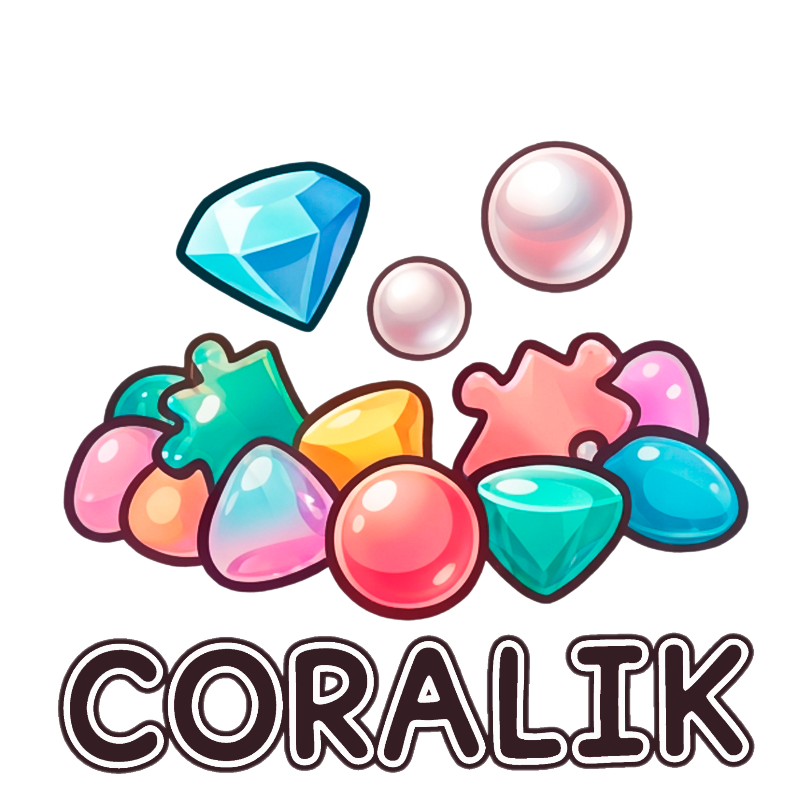

Простые мобильные игры с понятными правилами, гибкими настройками и комфортной рекламой без постоянных прерываний.
Классические поля 3×3 и 4×4, дополнительные механики, исчезающие фишки, игра против ИИ или вдвоём.
Слияние цифр и картинок, разные размеры поля, множество тем, сохранение прогресса и игра офлайн.